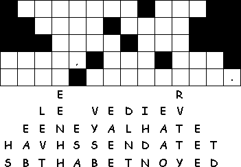
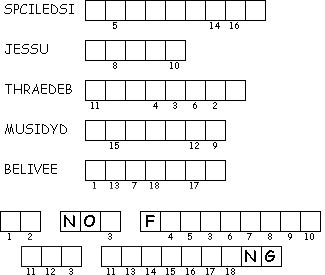

This Week: Acts 5:27-32, Psalm 118:14-29 or Psalm 150, Revelation 1:4-8, John 20:19-31
Middle-School Pew-work
|
19Then the same
day at evening, being the first day of the week, when the doors
were shut where the disciples were assembled for fear of the
Jews, came Jesus and stood in the midst, and saith unto them,
Peace be unto you. |
remitted unto them; and
whose soever sins ye |
thy finger, and behold my
hands; and reach hither thy hand, and thrust it into my side: and
be not faithless, but believing. |
What are the
ways that you share fellowship with other
believers?
________________________________________________________________________
________________________________________________________________________
________________________________________________________________________
________________________________________________________________________
________________________________________________________________________
________________________________________________________________________
________________________________________________________________________
________________________________________________________________________
________________________________________________________________________
|
 |
 |
Next week: Acts 9:1-6, (7-20), Psalm 30, Revelation 5:11-14, John 21:1-19